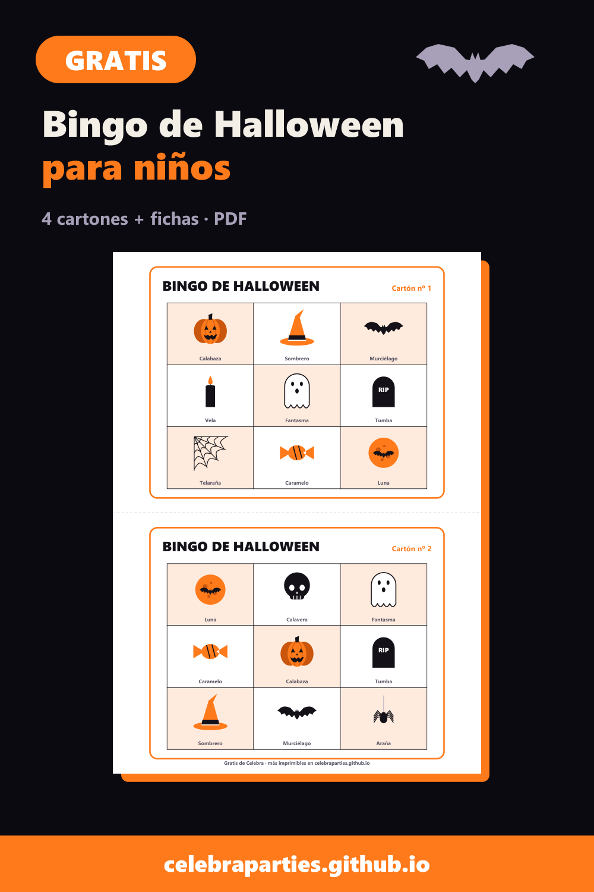

7 juegos de Halloween para niños en casa (con bingo gratis para imprimir)

La tarde de Halloween es larga y los niños llegan con mucha energía. Estos juegos se preparan en cinco minutos con lo que hay en casa. Y el primero te lo regalamos listo para imprimir.
1. Bingo de Halloween (gratis)
4 cartones distintos con dibujos (calabaza, fantasma, murciélago, telaraña…) y fichas para cantar. Vale para niños que aún no leen, porque cada casilla tiene su dibujo. Para marcar, usad caramelos: el que canta bingo se los come.
Descargar el bingo de Halloween gratis (PDF)
2. Búsqueda del tesoro
Esconde las chuches y deja pistas por la casa: cada pista lleva a la siguiente. Funciona con niños de 4 a 10 años y es el juego que más recuerdan.
3. La momia más rápida
Por parejas, un rollo de papel higiénico por pareja: gana quien convierta antes a su compañero en momia.
4. Congelados como fantasmas
Música de Halloween. Cuando se para, todos quietos como fantasmas. Quien se mueva, queda eliminado.
5. Adivina qué hay en la caja
Una caja con un agujero y dentro «ojos» (uvas peladas), «sesos» (espaguetis cocidos) y «dientes» (maíz). Gritos garantizados.
6. Bolos de calabaza
Botellas de agua vacías envueltas en papel higiénico como momias, y una calabaza pequeña o una pelota naranja como bola.
7. Cuentacuentos a oscuras
Luces apagadas, una linterna bajo la barbilla y cada niño añade una frase a la historia de miedo.
¿Quieres la búsqueda del tesoro ya preparada?
La búsqueda del tesoro de Halloween de Celebra trae la carta de la bruja Calabruja, 9 pistas con adivinanzas y las mismas con dibujos para los peques, cartel del tesoro y diplomas. Solo tienes que imprimir, esconder y leer la primera pista en voz alta.